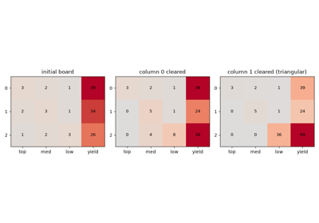
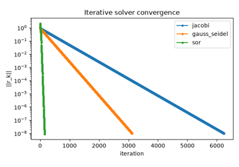
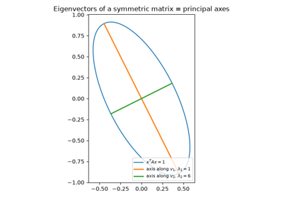
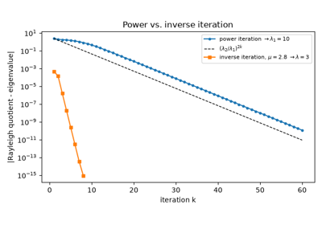
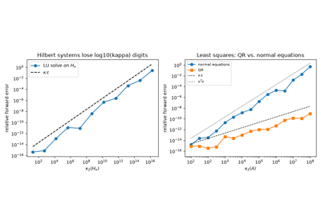
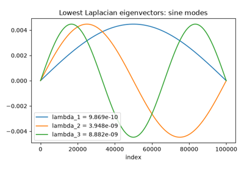

Breakthroughs in Numerical Linear Algebra#
“Linear algebra is the ultimate service subject.” – attributed to Gilbert Strang
Solving \(Ax=b\) is arguably the most frequently called subroutine
in applied mathematics. The story of how to do it well – not just
correctly, but stably in floating-point arithmetic, without needless
loss of precision – runs from the ancient roots of elimination to the
mid-20th-century discovery that some “obvious” reformulations are
numerically disastrous. This chronology traces the decompositions and
iterative solvers behind mathematicskit.linalg.
c. 100 CE – The Nine Chapters and Elimination#
The Chinese classic Jiuzhang Suanshu (“The Nine Chapters on the Mathematical Art”) was compiled from older material and reached its final form by around the 1st century CE. Its eighth chapter solves simultaneous linear equations by arranging their coefficients in a rectangular array and eliminating unknowns column by column. The procedure is essentially the one Isaac Newton described in Europe in 1707, and it became attached to Carl Friedrich Gauss’s name after his work on least squares, some seventeen centuries after the Nine Chapters.
Implementation: mathematicskit.numerical_analysis.systems.regression.PolynomialRegression()’s
underlying solves, and every dense linear system in this package, rest
on this elimination idea, now delegated to LAPACK through
scipy.linalg.lu().

Elimination in the Nine Chapters: the three grades of grain
1750 – Cramer’s Rule#
Gabriel Cramer’s 1750 treatise on algebraic curves needed to find the curve of a given degree through a given set of points, which meant solving a system of linear equations. In an appendix he stated a general rule for writing down the solution of \(n\) equations in \(n\) unknowns: each unknown is a ratio whose denominator is built from the coefficients alone and whose numerator is the same expression with that unknown’s coefficients replaced by the right-hand sides. In modern terms these expressions are determinants. Colin Maclaurin had published the cases of two and three unknowns in 1748, and Cramer’s rule helped launch the theory of determinants, which dominated linear algebra for the next century. The rule is a formula, not an algorithm: evaluated with determinants it costs far more than elimination.
Implementation: mathematicskit.linalg.systems.cramer.cramer_solve()
evaluates the rule with numpy.linalg.slogdet(). Each determinant
is itself an LU factorization, so the rule costs \(n+1\)
factorizations. The gallery example times it against
lu_solve_system() to show the
extra factor of \(n\).
References: G. Cramer, Introduction à l’analyse des lignes courbes algébriques (Geneva: Frères Cramer et Cl. Philibert, 1750), Appendix I; C. Maclaurin, A Treatise of Algebra (London: A. Millar and J. Nourse, 1748).
1809 – Gauss and LU Decomposition#
Carl Friedrich Gauss’s elimination procedure for the least-squares normal equations (see the numerical-analysis chronology) implicitly factors the matrix into a lower-triangular and an upper-triangular matrix, \(A = LU\). The factorization is made numerically robust by choosing the largest available pivot at each step; this partial pivoting was analyzed only much later, in the error-analysis literature of the 1940s and 1950s. Once \(A\) is factored, solving for a new right-hand side costs only \(O(n^2)\) operations instead of the \(O(n^3)\) of a fresh elimination.
Implementation: mathematicskit.linalg.systems.lu.lu_decompose()
wraps scipy.linalg.lu() for this partial-pivoted factorization;
lu_solve_system() reuses it via
scipy.linalg.lu_factor()/lu_solve().
References: C. F. Gauss, Theoria Motus Corporum Coelestium (Hamburg: Perthes et Besser, 1809).

1823-1950 – Gauss-Seidel and Successive Over-Relaxation#
In an 1823 letter to his student Christian Ludwig Gerling, Gauss described solving the normal equations of a survey adjustment “indirectly”: correct one unknown at a time from its own equation, using the latest values of the others, and repeat. He remarked that he could do it half asleep. Carl Gustav Jacob Jacobi published a variant in 1845 that updates every unknown simultaneously from the previous iterate, and Philipp Ludwig von Seidel analyzed Gauss’s sweep in 1874. Writing \(A = D + L + U\) (diagonal, strictly lower, strictly upper), both are fixed-point iterations \(x_{k+1} = G x_k + c\), and they converge from any starting point exactly when the spectral radius \(\rho(G)\) is below one.
The computer era turned this into a quantitative theory. In 1950 Stanley Frankel and David Young independently showed that over-correcting each update by a factor \(\omega\) (successive over-relaxation, SOR) can speed convergence enormously. For the “consistently ordered” matrices of discretized elliptic equations, Young proved that \(\rho(G_{GS}) = \rho(G_J)^2\) and found the best relaxation factor exactly:
For the 1-D Poisson matrix of size 40 this cuts roughly 3,100 Gauss-Seidel sweeps to about 150.
Implementation: mathematicskit.linalg.systems.stationary.JacobiIteration,
GaussSeidel, and
SOR are hand-rolled,
because scipy has no stationary-iteration solver and the sweep itself is
the lesson. They share the
IterativeLinearSolver
interface and residual history of the Krylov solvers.
jacobi_spectral_radius()
and optimal_sor_omega()
evaluate Young’s theory.
References: C. F. Gauss, letter to C. L. Gerling, 26 December 1823, in Werke 9 (Göttingen, 1903), 278-281; C. G. J. Jacobi, “Ueber eine neue Auflösungsart der bei der Methode der kleinsten Quadrate vorkommenden lineären Gleichungen,” Astronomische Nachrichten 22 (1845), 297-306; P. L. von Seidel, “Über ein Verfahren, die Gleichungen, auf welche die Methode der kleinsten Quadrate führt, sowie lineäre Gleichungen überhaupt, durch successive Annäherung aufzulösen,” Abhandlungen der Bayerischen Akademie der Wissenschaften, Mathematisch-Physikalische Classe 11 (1874), 81-108; S. P. Frankel, “Convergence Rates of Iterative Treatments of Partial Differential Equations,” Mathematical Tables and Other Aids to Computation 4(30) (1950), 65-75; D. M. Young, “Iterative Methods for Solving Partial Difference Equations of Elliptic Type,” Transactions of the American Mathematical Society 76(1) (1954), 92-111.

Jacobi, Gauss-Seidel, and successive over-relaxation
1829 – Cauchy and the Eigenvalue Problem#
Augustin-Louis Cauchy’s 1829 memoir on the principal axes of quadratic forms proved that a real symmetric matrix has only real eigenvalues and an orthogonal basis of eigenvectors. This is the spectral theorem in essence, written decades before the word “eigenvalue” (from David Hilbert’s German Eigenwert) entered the language around 1904. Carl Gustav Jacob Jacobi’s 1846 rotation method aside, practical algorithms for computing eigenvalues, rather than proving they exist, had to wait for the computer era.
Implementation: mathematicskit.linalg.systems.eigen.eigen_symmetric()
wraps numpy.linalg.eigh() for the symmetric case that Cauchy’s
theorem covers; eigen_general()
wraps numpy.linalg.eig() for the general case, whose spectrum may
be complex.
References: A.-L. Cauchy, “Sur l’équation à l’aide de laquelle on détermine les inégalités séculaires des mouvements des planètes,” Exercices de mathématiques 4 (1829).

Cauchy’s spectral theorem: principal axes of a quadratic form
1858 – Cayley and the Cayley-Hamilton Theorem#
Arthur Cayley’s 1858 “Memoir on the Theory of Matrices” was the first to treat a matrix as a single algebraic object that can be added, multiplied, and inverted, rather than as shorthand for a system of equations. Its central result is that every square matrix satisfies its own characteristic equation. Cayley checked the 2x2 case directly, said he had verified the 3x3 case, and saw no need for a general proof. William Rowan Hamilton had proved a special case for linear maps of quaternions in 1853, and Ferdinand Georg Frobenius gave the first general proof in 1878. A useful consequence is that every power of \(A\), and \(A^{-1}\) itself, is a polynomial in \(A\) of degree less than \(n\). That fact underlies Krylov subspace methods and the theory of matrix functions.
Implementation: mathematicskit.linalg.systems.matrix_polynomial.characteristic_polynomial()
wraps numpy.poly(), and
matrix_polynomial()
evaluates a polynomial at a matrix by Horner’s rule. The tests check
that \(p_A(A)\) vanishes to rounding error, and the gallery example
rebuilds \(A^{-1}\) from the characteristic polynomial.
References: A. Cayley, “A Memoir on the Theory of Matrices,” Philosophical Transactions of the Royal Society of London 148 (1858), 17-37; W. R. Hamilton, Lectures on Quaternions (Dublin: Hodges and Smith, 1853); F. G. Frobenius, “Über lineare Substitutionen und bilineare Formen,” Journal für die reine und angewandte Mathematik 84 (1878), 1-63.
1883-1958 – Gram-Schmidt, Householder, and QR#
Jørgen Pedersen Gram (1883) and Erhard Schmidt (1907) formalized the process of building an orthonormal basis one vector at a time, by subtracting from each new vector its projections onto the vectors already built. Applied to a matrix’s columns, the process factors the matrix as \(A = QR\), with \(Q\) orthonormal and \(R\) upper triangular. Alston Householder’s 1958 paper gave a very different and far more numerically stable route to the same factorization: a sequence of reflections that zero out the entries below the diagonal directly, with no re-orthogonalization at all. The pair is the textbook demonstration that two mathematically equivalent procedures can behave completely differently once floating-point rounding enters.
Implementation: mathematicskit.linalg.systems.qr.householder_qr()
wraps scipy.linalg.qr().
gram_schmidt_qr() keeps the
classical and modified Gram-Schmidt constructions hand-rolled to show,
via orthogonality_error(), how
much orthogonality classical Gram-Schmidt loses on an ill-conditioned
matrix compared with Householder’s reflections.
References: J. P. Gram, “Ueber die Entwickelung reeller Functionen in Reihen mittelst der Methode der kleinsten Quadrate,” Journal für die reine und angewandte Mathematik 94 (1883), 41-73; E. Schmidt, “Zur Theorie der linearen und nichtlinearen Integralgleichungen,” Mathematische Annalen 63 (1907), 433-476; A. S. Householder, “Unitary Triangularization of a Nonsymmetric Matrix,” Journal of the ACM 5(4) (1958), 339-342.

1910-1924 – Cholesky’s Decomposition#
André-Louis Cholesky was an artillery officer and geodesist who worked on triangulation surveys for the French army’s Service géographique. By 1910 he had devised a factorization for the symmetric positive-definite systems that survey adjustment produces: \(A = LL^T\), with \(L\) lower triangular. It costs roughly half as much as a general LU factorization and needs no pivot search, because the diagonal entries of a symmetric positive-definite matrix can always be used directly. Cholesky was killed in action in 1918; Commandant Benoit published the method from his manuscripts in 1924.
Implementation: mathematicskit.linalg.systems.cholesky.cholesky_decompose()
wraps numpy.linalg.cholesky() for this factorization. Its failure
(LAPACK’s ?potrf raises an error when a pivot would require the
square root of a negative number) doubles as a positive-definiteness
test in
is_symmetric_positive_definite().
cholesky_solve() reuses the
factorization for a forward and backward triangular solve with
scipy.linalg.solve_triangular().
References: Commandant Benoit, “Note sur une méthode de résolution des équations normales provenant de l’application de la méthode des moindres carrés à un système d’équations linéaires en nombre inférieur à celui des inconnues (Procédé du Commandant Cholesky),” Bulletin Géodésique 2 (1924), 67-77; A.-L. Cholesky, “Sur la résolution numérique des systèmes d’équations linéaires” (manuscript dated 1910).

1920-1955 – Moore, Penrose, and the Pseudoinverse#
A rectangular or singular matrix has no inverse, but E. H. Moore showed in 1920 that it still has a canonical “general reciprocal”. His work was written in an idiosyncratic notation and was largely overlooked. Arne Bjerhammar rediscovered the idea for geodetic adjustment in 1951, and Roger Penrose, then a graduate student, characterized it in 1955 as the unique matrix \(X = A^+\) satisfying four equations:
Penrose also showed that \(x = A^+ b\) is the least-squares solution of \(Ax = b\) with the smallest norm. That gives every linear system, whether over- or underdetermined and whatever its rank, a single well-defined “best” answer. Through the SVD, \(A^+ = V\Sigma^+U^T\), where \(\Sigma^+\) inverts the nonzero singular values and leaves the zeros in place.
Implementation: mathematicskit.linalg.systems.pseudoinverse.pseudoinverse()
wraps the SVD-based numpy.linalg.pinv(), and
penrose_residuals()
measures how far a candidate matrix is from satisfying each of the four
equations.
References: E. H. Moore, “On the Reciprocal of the General Algebraic Matrix,” Bulletin of the American Mathematical Society 26 (1920), 394-395; A. Bjerhammar, “Application of Calculus of Matrices to Method of Least Squares; with Special References to Geodetic Calculations,” Transactions of the Royal Institute of Technology, Stockholm 49 (1951); R. Penrose, “A Generalized Inverse for Matrices,” Proceedings of the Cambridge Philosophical Society 51(3) (1955), 406-413.
1929 – Power Iteration and von Mises#
Richard von Mises and Hilda Pollaczek-Geiringer’s 1929 paper gave power iteration its first systematic numerical treatment. Repeatedly multiplying a vector by a matrix and renormalizing converges to the eigenvector of the largest-magnitude eigenvalue, and the Rayleigh quotient converges to that eigenvalue. Inverse iteration, which Helmut Wielandt developed in 1944, applies the same idea to the inverse of a shifted matrix and converges to whichever eigenvalue lies nearest the shift. Both remain the simplest route to a single eigenpair when the full spectrum isn’t needed, and both are ancestors of the shifted QR algorithm that production libraries now use for the full spectrum.
Implementation: mathematicskit.linalg.systems.eigen.power_iteration()
and inverse_iteration()
implement both as originally described. They are the one algorithm
family in this domain kept hand-rolled, because the iteration itself
is the point.
References: R. von Mises and H. Pollaczek-Geiringer, “Praktische Verfahren der Gleichungsauflösung,” Zeitschrift für Angewandte Mathematik und Mechanik 9 (1929), 58-77, 152-164.

Von Mises power iteration and Wielandt inverse iteration
1931 – Gershgorin’s Circle Theorem#
Semyon Aronovich Gershgorin, working in Leningrad, published a short paper in 1931 showing that eigenvalues can be located without computing them. Every eigenvalue of \(A\) lies in at least one of the discs centered on the diagonal entries, each with radius equal to the sum of the absolute values of the other entries in its row:
The proof takes one line: look at the largest component of an eigenvector. Gershgorin also showed that a connected cluster of \(m\) discs, disjoint from the rest, contains exactly \(m\) eigenvalues. An immediate corollary is that a strictly diagonally dominant matrix is nonsingular. That is the same condition that guarantees convergence of the Jacobi and Gauss-Seidel iterations, and the theorem is still the quickest sanity check on a computed spectrum.
Implementation: mathematicskit.linalg.systems.gershgorin.gershgorin_discs()
computes the row (or column) discs into a
GershgorinResult, whose
contains()
tests membership in their union. It is hand-rolled because the discs
are a closed-form function of the entries.
References: S. Gerschgorin, “Über die Abgrenzung der Eigenwerte einer Matrix,” Izvestiya Akademii Nauk SSSR, Otdelenie Matematicheskikh i Estestvennykh Nauk 6 (1931), 749-754; R. S. Varga, Geršgorin and His Circles (Berlin: Springer, 2004).
1936 – Eckart, Young, and the Singular Value Decomposition#
Carl Eckart and Gale Young’s 1936 paper built on earlier special cases by Eugenio Beltrami, Camille Jordan, and James Joseph Sylvester. It applied the singular value decomposition \(A = U\Sigma V^T\) to general rectangular matrices and proved the low-rank approximation theorem that bears their names: truncating the SVD to its \(k\) largest singular values gives the best possible rank-\(k\) approximation to \(A\) in the Frobenius norm. Leon Mirsky extended the result in 1960 to every unitarily invariant norm, including the spectral norm. The theorem underlies everything from principal component analysis to modern recommender systems.
Implementation: mathematicskit.linalg.systems.svd.svd_decompose()
wraps the numerically stable, bidiagonalization-based algorithm in
numpy.linalg.svd(). This is the modern production route, not
Eckart and Young’s construction through the eigendecomposition of
\(A^TA\), which squares the condition number.
References: C. Eckart and G. Young, “The Approximation of One Matrix by Another of Lower Rank,” Psychometrika 1(3) (1936), 211-218; L. Mirsky, “Symmetric Gauge Functions and Unitarily Invariant Norms,” Quarterly Journal of Mathematics 11(1) (1960), 50-59.

Eckart-Young: the best low-rank approximation from the SVD
1947-1948 – Turing, von Neumann, and the Condition Number#
John von Neumann and Herman Goldstine’s 1947 study of Gaussian elimination and Alan Turing’s 1948 paper “Rounding-Off Errors in Matrix Processes” founded the rigorous rounding-error analysis of matrix computations. Turing coined the term “condition number” for a single number that measures how much a linear system’s solution can be corrupted by small perturbations in its data, whichever algorithm solves it. Turing’s own versions were built from matrix norms; the standard modern 2-norm version is the ratio of the largest to the smallest singular value. The same analysis explained why some “obvious” reformulations lose accuracy that no amount of extra floating-point precision recovers. A key example is forming \(A^TA\) explicitly for least squares, rather than working with \(A\) directly through its QR factorization.
Implementation: mathematicskit.linalg.systems.stability.condition_number_2norm()
wraps numpy.linalg.cond() for this ratio.
least_squares_normal_equations()
and least_squares_qr()
solve the same least-squares problem two ways, so that the
squared-condition-number penalty of the normal equations can be
measured side by side.
References: J. von Neumann and H. H. Goldstine, “Numerical Inverting of Matrices of High Order,” Bulletin of the American Mathematical Society 53(11) (1947), 1021-1099; A. M. Turing, “Rounding-Off Errors in Matrix Processes,” Quarterly Journal of Mechanics and Applied Mathematics 1(1) (1948), 287-308.

Turing’s condition number: how much a linear system amplifies error
1950 – Lanczos Iteration#
Cornelius Lanczos, working at the Institute for Numerical Analysis at the National Bureau of Standards, proposed in 1950 to reduce a symmetric matrix to tridiagonal form using nothing but matrix-vector products. Starting from a vector \(q_1\), a three-term recurrence
builds an orthonormal basis of the Krylov subspace \(\operatorname{span}\{q_1, Aq_1, \dots, A^{m-1}q_1\}\) in which \(A\) is represented by a small tridiagonal matrix \(T_m\). In floating point the vectors quickly lose orthogonality, and the method was set aside as unstable until Christopher Paige’s 1971 thesis showed that the loss of orthogonality goes hand in hand with convergence. The extreme eigenvalues of \(T_m\) (the Ritz values) approximate those of \(A\) long before \(m\) reaches \(n\). Danny Sorensen’s 1992 implicit restarting made the method robust, and it became the ARPACK library, the standard tool for a few eigenpairs of a matrix too large to store densely.
Implementation: mathematicskit.linalg.systems.lanczos.lanczos_eigsh()
wraps scipy.sparse.linalg.eigsh() (ARPACK’s implicitly restarted
Lanczos), with an optional shift-invert mode for eigenvalues near a
chosen value. The gallery example recovers closed-form eigenvalues of a
sparse Laplacian with \(n = 100\,000\).
References: C. Lanczos, “An Iteration Method for the Solution of the Eigenvalue Problem of Linear Differential and Integral Operators,” Journal of Research of the National Bureau of Standards 45(4) (1950), 255-282; C. C. Paige, “The Computation of Eigenvalues and Eigenvectors of Very Large Sparse Matrices,” Ph.D. thesis, University of London (1971); D. C. Sorensen, “Implicit Application of Polynomial Filters in a k-Step Arnoldi Method,” SIAM Journal on Matrix Analysis and Applications 13(1) (1992), 357-385.

Lanczos: a few eigenvalues of a very large matrix
1952 – Hestenes, Stiefel, and the Conjugate Gradient Method#
Magnus Hestenes and Eduard Stiefel’s 1952 paper introduced the conjugate gradient method for symmetric positive-definite systems. Instead of Gaussian elimination’s direct \(O(n^3)\) factorization, it generates a sequence of search directions that are mutually conjugate with respect to \(A\). In exact arithmetic it converges within \(n\) steps, and in practice far sooner for well-conditioned matrices or matrices with clustered eigenvalues. It launched the family now called Krylov subspace methods, decades before that name became standard. Yousef Saad and Martin Schultz’s 1986 GMRES extended the same Krylov-subspace idea to general non-symmetric systems.
Implementation: mathematicskit.linalg.systems.iterative.ConjugateGradient
and GMRES wrap
scipy.sparse.linalg.cg()/gmres()
directly. They add residual-history tracking through each solver’s
callback, which a bare library call doesn’t expose.
References: M. R. Hestenes and E. Stiefel, “Methods of Conjugate Gradients for Solving Linear Systems,” Journal of Research of the National Bureau of Standards 49(6) (1952), 409-436; Y. Saad and M. H. Schultz, “GMRES: A Generalized Minimal Residual Algorithm for Solving Nonsymmetric Linear Systems,” SIAM Journal on Scientific and Statistical Computing 7(3) (1986), 856-869.

1961 – Francis, Kublanovskaya, and the QR Algorithm#
John Francis in England and Vera Kublanovskaya in Leningrad independently discovered the algorithm that now computes nearly every dense eigenvalue problem. It builds on Heinz Rutishauser’s 1958 LR algorithm: factor \(A_k = Q_kR_k\), then multiply the factors back in reverse order.
Every iterate is orthogonally similar to \(A\), and the entries below the diagonal shrink like \(|\lambda_{i+1}/\lambda_i|^k\), so the iterates converge to the Schur form \(A = ZTZ^T\) whose existence Issai Schur proved in 1909, with the eigenvalues on the diagonal of \(T\). Francis made the method practical. He first reduced \(A\) to Hessenberg form so each step costs \(O(n^2)\), then added shifts that give quadratic or cubic convergence, and finally used the implicit double shift to handle complex-conjugate pairs in real arithmetic. The QR algorithm was later named one of the ten most important algorithms of the 20th century.
Implementation: mathematicskit.linalg.systems.schur.schur_decompose()
wraps scipy.linalg.schur() (LAPACK’s implicitly shifted Francis QR)
into a SchurResult, and
hessenberg_reduce() wraps
scipy.linalg.hessenberg(). The gallery example runs the unshifted
iteration by hand with
householder_qr() and checks the
predicted subdiagonal decay rates.
References: J. G. F. Francis, “The QR Transformation: A Unitary Analogue to the LR Transformation – Part 1,” The Computer Journal 4(3) (1961), 265-271, and “Part 2,” The Computer Journal 4(4) (1962), 332-345; V. N. Kublanovskaya, “On Some Algorithms for the Solution of the Complete Eigenvalue Problem,” USSR Computational Mathematics and Mathematical Physics 1(3) (1962), 637-657; H. Rutishauser, “Solution of Eigenvalue Problems with the LR-Transformation,” National Bureau of Standards Applied Mathematics Series 49 (1958), 47-81; I. Schur, “Über die charakteristischen Wurzeln einer linearen Substitution mit einer Anwendung auf die Theorie der Integralgleichungen,” Mathematische Annalen 66 (1909), 488-510.